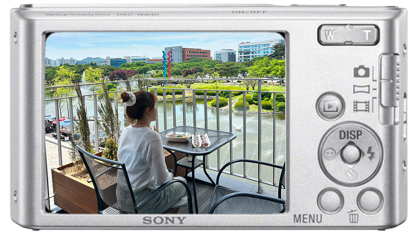

about meW/T zooms · MENU flips photos · the round button snaps ✦
I’m an HCI researcher and an incoming PhD student in Industrial Design at KAIST, exploring physical–digital interaction in Make Lab under Prof. Andrea Bianchi.
My research focuses on creativity support: I design and build interactive systems that extend people's creative capacities.
Previously, I earned an MSc in Industrial Design at KAIST, and a B.S. in Culture & Design Management at Yonsei University.
AtoMix: Fostering Structured Visual Ideation for Remote Groups through Atomic Composition and Cross-Pollination
C&C ’26: Creativity and Cognition
6-3-5 brainwriting is a structured group ideation method that produces many ideas quickly, but current generative tools struggle to support modular, visual, and collaborative idea development. AtoMix addresses this by enabling atomic prompting, reusable visual elements, and collaborative composition, resulting in more effective and fine-grained visual ideation compared to existing approaches.
Investigating Work Companion Robot Interactions to Enhance Work-from-Home Productivity and Experience
Archives of Design Research — AoDR Vol. 37, No. 4
This study examines how a tabletop robot companion influences knowledge-worker productivity in work-from-home contexts. By evaluating Roby in real-world settings, the paper identifies factors that can inform future intelligent robot companions for remote work.